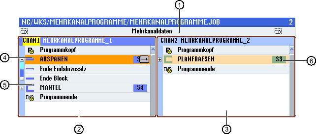

Um Programme zu strukturieren und so auch für eine größere Übersichtlichkeit bei der synchronisierten Ansicht vorzubereiten, haben Sie die Möglichkeit mehrere Sätze (G-Code und/oder ShopTurn-Arbeitsschritte) zu Programmblöcken zusammenzufassen.
Programme strukturieren
-
Erstellen Sie vor der eigentlichen Programmerstellung ein Programmgerüst durch leere Blöcke.
-
Strukturieren Sie mit Hilfe der Blockbildung bereits vorhandene G-Code- oder ShopTurn-Programme.

① | Kanalübergreifende Daten aus dem Fenster "Mehrkanaldaten". |
② | Programm "MEHRKANALPROGRAMME_1" im Kanal 1 geöffnet. |
③ | Programm "MEHRKANALPROGRAMME_2" im Kanal 2 geöffnet. |
④ | Aktueller Programmblock mit Blocknamen "Abspanen". Der Programmblock ist geöffnet und ein Einfahr-Zusatzcode ist zugeschaltet Der Programmblock ist der Hauptspindel zugeordnet. |
⑤ | Programmblock mit Blocknamen "Mantel". Der Programmblock ist geschlossen. Um festzustellen, ob ein Einfahr-Zusatzcode zugeschaltet oder ein automatischer Rückzug aktiviert ist, öffnen Sie den Block mit der Taste <Cursor rechts>. |
⑥ | Programmblock mit Blocknamen "Planfraesen". Der Programmblock ist der Gegenspindel zugeordnet. Die Spindelzuordnung ist farblich unterschieden. |
Strukturierte Programme im Mehrkanaleditor
Einstellungen für Programmblock
Anzeige | Bedeutung |
|---|---|
Text | Bezeichnung des Blocks |
Spindel |
|
Einfahr-Zusatzcode |
|
Automat. Rückzug |
|
| Hinweis |
Rückzug über BlockfunktionBeim Wechseln der Bearbeitungsspindel über Programmblöcke ist darauf zu achten, dass es bei der Positionierbewegung zu keiner Kollision an der Maschine kommt. |
Vorgehensweise


Blöcke öffnen und schließen
Blöcke verschieben
Sie haben die Möglichkeit, einzelne oder mehrere Blöcke mit Hilfe der Softkeys "Markieren", "Kopieren", "Ausschneiden" und "Einfügen" innerhalb des Programms zu bewegen.